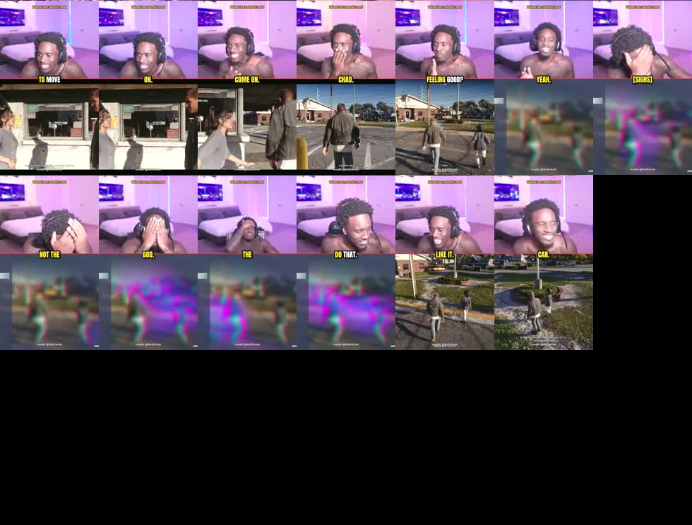
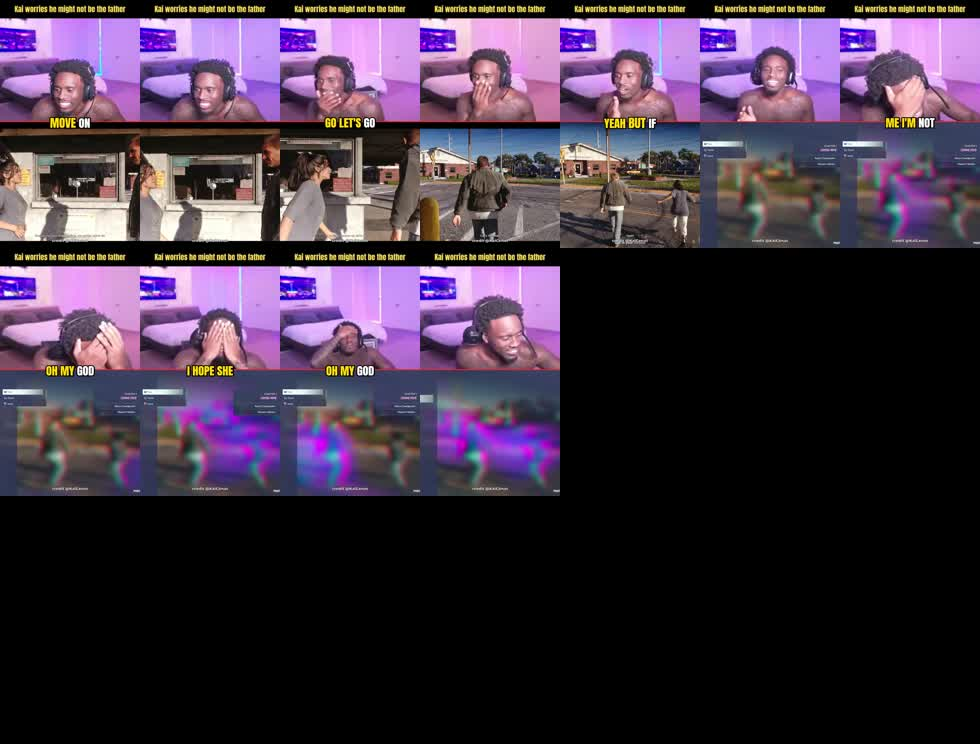
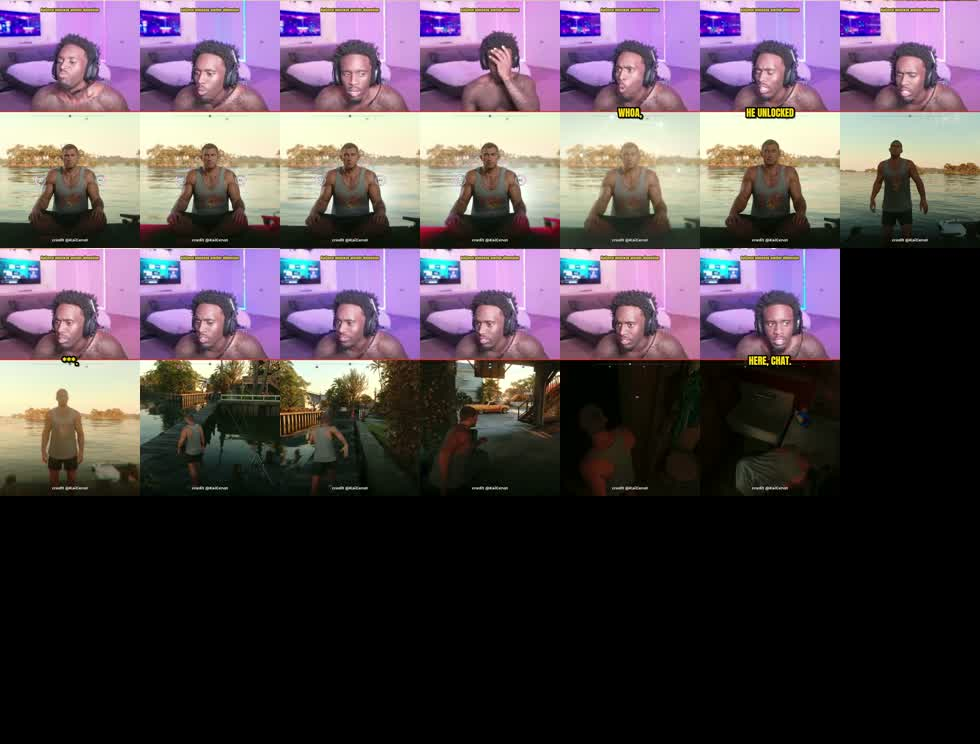
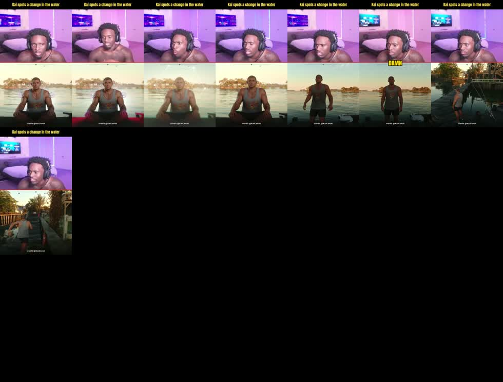
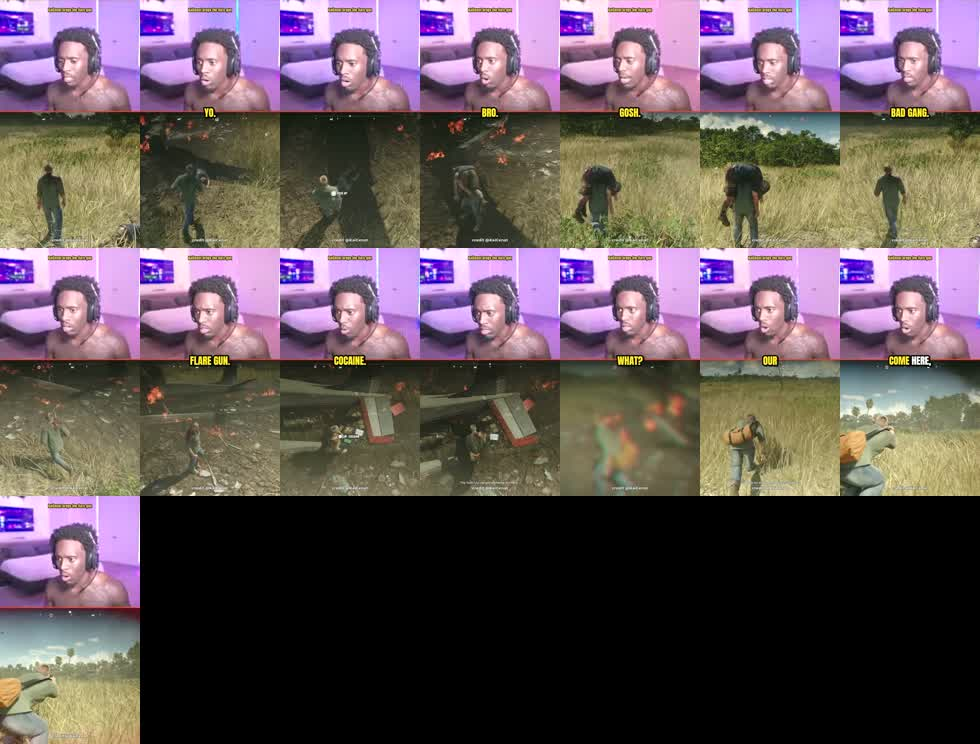
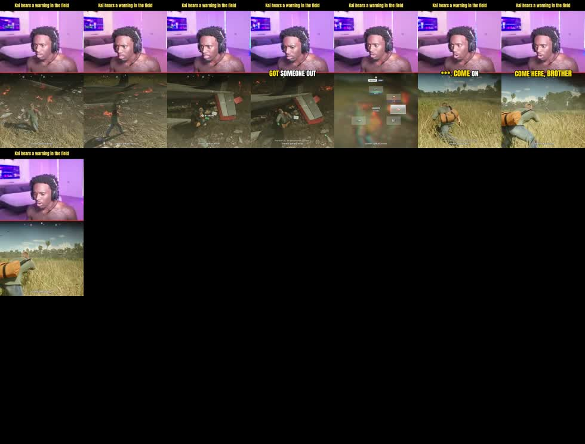

Same three Kai moments, before and after
Play the development export first. Compare it with the original or the public reference, using one audio track at a time. Raw transcripts include uncensored speech. Each row shows a five-second source interval. Different recognizers sometimes assign a word to adjacent rows.
1. Kai worries he might not be the father
Editorial export
Original supplied export
Public reference · 23.73 million recorded views
0–3 s: An NPC telling people to move opens the clip. The old headline implies a reveal, although Kai voices a fear. 12–23 s: the sidewalk dialogue and Kai’s paternity speculation overlap. Around 24–40 s the gameplay becomes blurred and colored while his face remains clear. At 44–53 s the conversation turns to a car. The revised headline tracks the uncertainty. Assess whether the closing exchange still belongs.
Source interval 0.00–42.22 s. Export 42.30 s. 78 rendered caption words. Full-window Groq 108, offline large-v3 105. Timestamped transcript · Full-window caption proof · Public reference.
Integrated audio -14.40 → -13.91 LUFS. True peak 3.23 → -1.80 dBTP. New full-frame black intervals ≥120 ms: 0. New whole-frame freezes ≥1 s: 0. These detectors cannot judge a blur inside gameplay or identify a voice under music.
Source-audio correlation at three points (1.0 is identical waveform shape): 7.61 s: 1.0, lag 0 ms, 21.15 s: 1.0, lag 0 ms, 34.69 s: 1.0, lag 0 ms.
Compare sampled frames every four seconds
Original

Editorial export

| Source time | Editorial burn | Full-window burn | Groq full window | Offline Whisper full window |
|---|
| 00–05 s | Excuse me, no congregating, you gotta move on I still can't believe it | Excuse me, no congregating, you gotta move on I still can't believe it | Excuse me, no congregating, you gotta move on I still can't believe it | Excuse me, no congregate you got to move on I Still can't believe it |
| 05–10 s | No congregating, come on All right, come on, let's go Let's | No congregating, come on All right, come on, let's go Let's | No congregating, come on All right, come on, let's go Let's | No clunker gating. Come on. Hey, come on. Let's go Yo |
| 10–15 s | go Thank you Yo, chat Cars this way Chat, I don't | go Thank you Yo, chat Cars this way Chat, I don't | go Thank you Yo, chat Cars this way Chat, I don't | Jack of course this way Yeah, I don't |
| 15–20 s | wanna, like, predict anything Feeling good? Yeah But if it gets to a | wanna, like, predict anything Feeling good? Yeah But if it gets to a | wanna, like, predict anything Feeling good? Yeah But if it gets to a Did | want to like predict anything if you're good. Yeah, but if it gets to a point |
| 20–25 s | point Did she tell | point Did she tell | point she tell | Did she tell me |
| 25–30 s | me I'm not the father? Oh my god | me I'm not the father? Oh my god | me I'm not the father? Oh my god | I'm not the father. Oh Oh, my God. |
| 30–35 s | I hope she don't tell me I'm | I hope she don't tell me I'm | I hope she don't tell me I'm | She don't tell me I'm not |
| 35–40 s | not the father, gang Oh my god | not the father, gang Oh my god | not the father, gang Oh my god | the father, gang. She |
| 40–45 s | She can't do that | She can't do that Yeah, looks | She can't do that Yeah, looks | can't do that. Yeah, it looks like |
| 45–50 s | | like it Look at my jolly *** No, you still driving that piece of *** car? Hey, | like it Look at my jolly ass No, you still driving that piece of shit car? Hey, | it. Look at my jolly ass. No. You still driving that piece of shit car? Hey, the |
| 50–55 s | | the phoenix was a classic But no, I got something new | the phoenix was a classic But no, I got something new | Phoenix was a classic. But no, I got something new. |
2. Kai spots a change in the water
Editorial export
Original supplied export
Public reference · 24.10 million recorded views
0–12 s: the avatar sits by the water. The source includes two controller prompts and a small facecam. The action is a change in the game, which is hard to infer from the face alone. Around 19–26 s the phrase about another dimension supplies context. Around 31 s the original masks “damn.” At 38–40 s Kai calls it a W. The later bag dialogue starts a different thought. Compare the reported cut range and the two independent readings of the opening word.
Source interval 9.90–40.46 s. Export 30.63 s. 14 rendered caption words. Full-window Groq 29, offline large-v3 30. Timestamped transcript · Full-window caption proof · Public reference.
Integrated audio -14.27 → -14.28 LUFS. True peak -0.84 → -1.25 dBTP. New full-frame black intervals ≥120 ms: 0. New whole-frame freezes ≥1 s: 0. These detectors cannot judge a blur inside gameplay or identify a voice under music.
Source-audio correlation at three points (1.0 is identical waveform shape): 5.51 s: 1.0, lag 0 ms, 15.32 s: 0.995, lag 0 ms, 25.12 s: 0.993, lag 0 ms.
Compare sampled frames every four seconds
Original

Editorial export

| Source time | Editorial burn | Full-window burn | Groq full window | Offline Whisper full window |
|---|
| 00–05 s | | | Lapiz, | |
| 05–10 s | | | | |
| 10–15 s | Lapiz, whoa, | Lapiz, whoa, | whoa, | my base whoa |
| 15–20 s | he | he | he | he |
| 20–25 s | unlocks like another dimension | unlocks like another dimension | unlocks like another dimension | unlocked like another dimension |
| 25–30 s | Damn | Damn | Damn | damn |
| 30–35 s | Damn | Damn | Damn | damn |
| 35–40 s | That was a W, chat | That was a W, chat | That was a W, chat | that was a w chat let |
| 40–45 s | | | | |
| 45–50 s | | | | me |
| 50–55 s | | Let me take this bag right here, chat Let me take this bag right here | Let me take this bag right here, chat Let me take this bag right here | take this back right here chat let me take this back right here |
3. Kai hears a warning in the field
Editorial export
Original supplied export
Public reference · 10.71 million recorded views
0–8 s: field footage leads into repeated calls. Around 16–25 s the avatar carries a body. At 30–38 s the gameplay changes to an item encounter. Around 44–48 s the lower panel becomes hard to read. Around 50–58 s another character appears and the warning supplies the stakes. The old title primes the viewer for a flare gun, while both audio models disagree with that spelling. The revised title points to the encounter. Check the repeated “yo” by ear.
Source interval 28.60–62.51 s. Export 34.00 s. 35 rendered caption words. Full-window Groq 65, offline large-v3 50. Timestamped transcript · Full-window caption proof · Public reference.
Integrated audio -14.38 → -15.75 LUFS. True peak -0.53 → -2.14 dBTP. New full-frame black intervals ≥120 ms: 0. New whole-frame freezes ≥1 s: 0. These detectors cannot judge a blur inside gameplay or identify a voice under music.
Source-audio correlation at three points (1.0 is identical waveform shape): 6.12 s: 0.998, lag 0 ms, 17.0 s: 0.999, lag 0 ms, 27.88 s: 0.983, lag 0 ms.
Compare sampled frames every four seconds
Original

Editorial export

| Source time | Editorial burn | Full-window burn | Groq full window | Offline Whisper full window |
|---|
| 00–05 s | | My bad game Yo, yo, yo, yo, yo, yo, yo, yo, yo, yo, yo, yo, yo | My bad game Yo, yo, yo, yo, yo, yo, yo, yo, yo, yo, yo, yo, yo | My bad, gang. Yo, yo, yo, yo, yo, yo. |
| 05–10 s | | | | |
| 10–15 s | | I got you, bro Oh my gosh | I got you, bro Oh my gosh Oh | I got you, bro. Oh, my gosh. |
| 15–20 s | | Oh my gosh Oh, | my gosh Oh, | Oh, my gosh. My |
| 20–25 s | | my bad game | my bad game | bad, gang. |
| 25–30 s | | | | |
| 30–35 s | flare gun | flare gun | Slur gun Cocaine | Slur gun. |
| 35–40 s | Cocaine | Cocaine | What? | Cocaine. |
| 40–45 s | What? Hey, we got someone out here. Hey, what? Hey, | What? Hey, we got someone out here. Hey, what? Hey, | Hey, we got someone out here. Hey, what? Hey, | Fuck. Hey, we got someone out here. Hey, what? Hey, we |
| 45–50 s | we got a scavenger You're here. So drop his *** and get our | we got a scavenger You're here. So drop his *** and get our | we got a scavenger You're here. So drop his ass and get our | got a scavenger here. So drop his ass and get our |
| 50–55 s | ***. Come on Come here, brother Come here, brother | ***. Come on Come here, brother Come here, brother | shit. Come on Come here, brother Come here, brother | shit. Come on. |
| 55–60 s | | | | |
| 60–65 s | | | | |
Editorial audit, references and picker decision